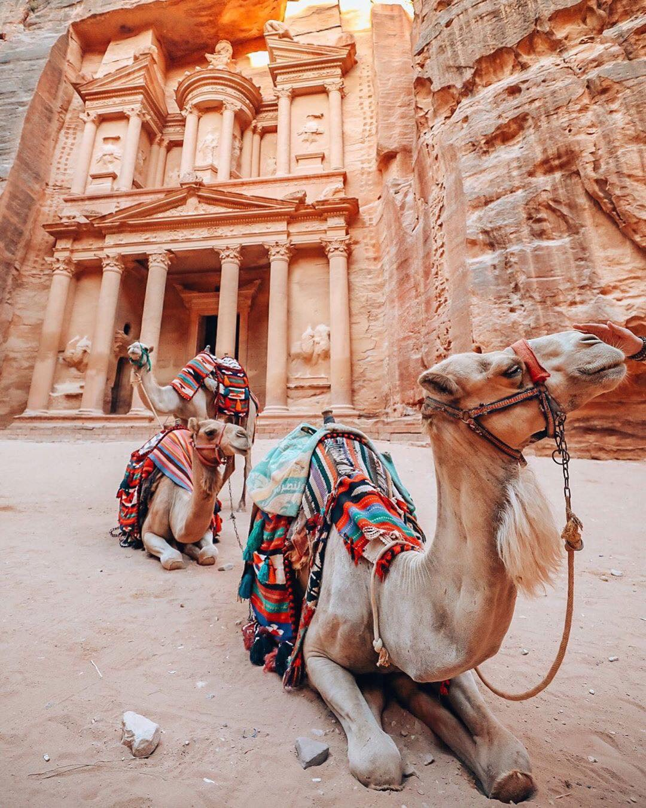

Welcome To Jordan
Growing up in 12 countries oversea Jordan is one of my favorite destinations in the world. It seems to have everything open-air museum and phenomenal natural. The lands are steeped in a history as old as the verses of the bible and have played an important part in the biggest religions in the world. Throw in delicious cuisine and welcoming locals, and you have a wonderful destination full of adventure and intrigue. I spent my teen years travelling the country around the country exploring its deserts, seas and cities. Along the way I decided to share with you guys several interesting facts about Jordan.
Jordan:The Perfect Introduction to Middle East
Jordan is a great destination first timer in the Middle East, Jordan is safe country most consider the safest country in the region so far. There is a chuck full of interesting places to see and long adventure to explore. Jordan very well suited for tourism. Finally, Jordanians people will welcome you with worm hospitality.
Love Iconic experience? Float in the Dead Sea is a lot of fun unlike anything you have felt before. Love to Relax in the Spa? Soak in the Ma’in Hot Springs! There is nothing like standing in a pool and letting a natural hot waterfall run over you. Love Indiana Jones? Get Adventurous at Petra! It won’t take long for the adventurous spirit to come over you. Petra, covered with so many different ruins, mountains, and trails, you’ll become an explorer in no time. My favorite spot to hike in the Monastery. Love Beautiful Landscapes? Camp in Wadi Rum! I don’t think anywhere in the world has more magnificent colors than Wadi Rum, the epic desert in southern Jordan where Lawrence of Arabia was filmed. Try to camp in the desert if you can — that will give you access to seeing the beautiful colors at every time of day, and they’re always changing dramatically. Love Tea? You’ll Drink a LOT of It. The tea never stops flowing in Jordan. You’ll be offered tea wherever you go. Last but not least if you Love Cities? Check out Rainbow Street in Amman! The Old City of Amman was as traditional a Middle Eastern city as you could expect but Rainbow Street could have fit seamlessly into Brooklyn or San Francisco! Rather than bars, you’ll find a lot of teahouses and shisha cafes with character.